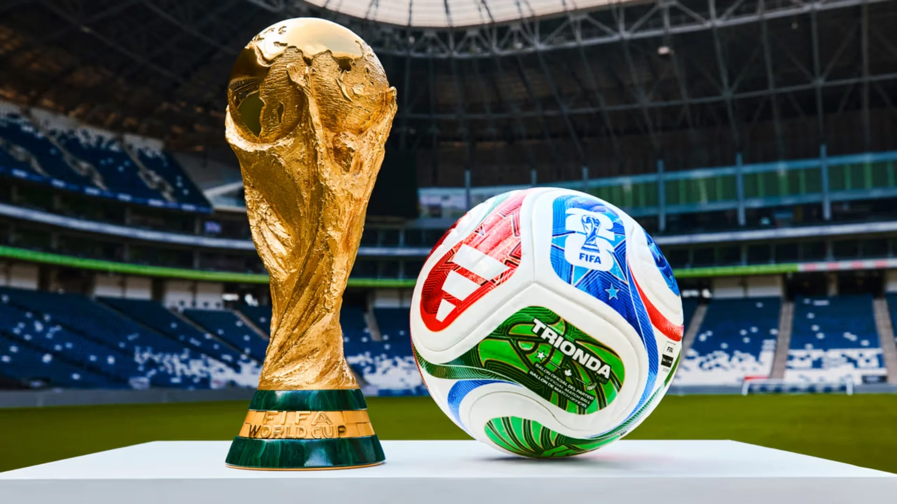

QUÉ ES?
Este evento deportivo se realiza cada cuatro años desde 1930, cuando en aquel momento se llamaba Campeonato Mundial de Fútbol, con la excepción de 1942 y 1946, en los que se suspendió debido al desarrollo y las consecuencias de la Segunda Guerra Mundial, respectivamente. Cuenta con dos etapas principales: un proceso clasificatorio en el que participan más de 200 selecciones nacionales y una fase final realizada cada cuatro años en una sede definida con anticipación en la que participarán 48 equipos a partir de la edición de 2026; durante un periodo cercano a un mes
